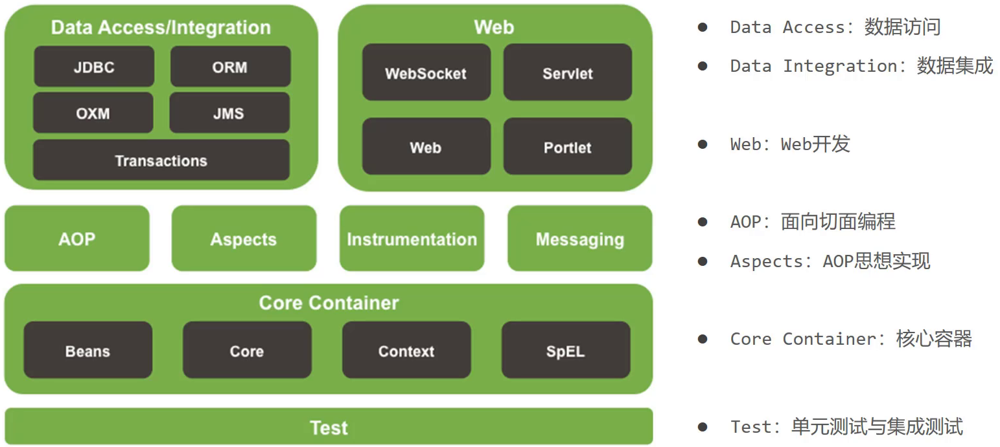

Spring Framework

- ORM：Object Reletion Mapping
- OXM：Object XML Mapping
- JMS: Java Message Service
- SpEL: Spring Expression Language
Spring核心概念
解决问题：
- IoC、IoC 容器、DI、Bean 是什么？
IoC
控制反转 (Inversion of Control) ，IoC 是 Spring 框架的核心，用来降低耦合。一种通过描述（Spring 中可以是 XML / 注解）并通过第三方（IoC 容器）去产生或获取特定对象的方式。
举个例子：你需要吃东西才能去运动，锻炼身体。此时你是一个对象，食物是一个对象，运动是你的一个方法。
通过我们传统的方式，你在运动之前需要根据自己的需求获取食物，通过 new food()，可能需要馒头、也可能需要牛肉，这些食物都需要你自己做。此时，你所依赖的食物的控制权在你这里。
而现在，给你配了一个营养师，他会根据你的运动，判断你需要什么食物，做好交给你，你吃就可以了。此时，食物的控制权在营养师这里，也就是第三方。
如果他给你做的食物坏掉了（不是你想要的食物），那就会抛出异常；如果他做不出来，那你就无法运动（程序启动失败）。
这就是控制反转，由对象主动 new 产生依赖对象转换为由外部提供依赖对象。
IoC 容器
在 Spring 中，实现控制反转的就是 IoC 容器，即提供对象的第三方。
IoC 容器负责对象的创建、初始化等工作，其中包含了数据层和业务层的类对象 。这些被 IoC 容器所管理的对象称作 Bean 对象。
DI 依赖注入
当 IoC 容器创建好 Bean 对象后，会在容器中建立 service对象与 dao对象之间的依赖关系。这个建立依赖关系的过程就是 依赖注入。
IoC 容器负责将被依赖对象赋值给调用者的成员变量，相当于为调用者注入它所依赖的对象实例。
总结
IoC 和 DI 的最终目标就是：充分解耦。具体实现靠:
- 使用 IoC 容器管理 bean（IoC)。
- 在 IoC 容器内将有依赖关系的 bean 进行关系绑定（DI）。
- 最终结果为：使用对象时不仅可以直接从 IoC 容器中获取，并且获取到的 bean 已经绑定了所有的依赖关系。
IoC：控制反转。对象控制权交给了第三方。
DI：依赖注入。绑定对象与对象之间的依赖关系。
IoC 容器：Spring 用来存放所创建对象的容器，也叫 Spring 容器。
Bean：IoC 容器中存放的对象称作 Bean 或 Bean 对象。
IoC
解决问题：
- IoC容器 如何知道要管理哪些 Bean？
- IoC容器 如何管理 Bean？
- 对象交给 IoC容器 管理之后，如何获取这些 Bean？
IoC 容器的设计主要是基于 BeanFactory 和 ApplicationContext 两个接口。
BeanFactory 提供了完整的 IoC 服务支持，是一个管理 Bean 的工厂，主要负责初始化各种 Bean。ApplicationContext 是 BeanFactory 的一个子接口，包含 BeanFactory 的所有功能，还扩展了其它功能。ApplicationContext 的实现类 ClassPathXmlApplicationContext 和FileSystemXmlApplicationContext 可以根据 xml 配置文件中的定义来装配 Bean。
创建 maven 项目，项目结构如图：
接口和类的代码如下：
1 | public interface BookDao { |
导入相关依赖，创建 spring 配置文件必需的依赖
1 | <dependency> |
在 Spring 配置文件 applicationContext.xml 中完成 bean 的配置
1 |
|
ApplicationContext
- 通过 ClassPathXmlApplicationContext 创建：从类路径加载 Spring 配置文件
1 | public class Application { |
- 通过 FileSystemXmlApplicationContext 创建：使用绝对路径加载 Spring 配置文件（不推荐使用）
1 | public class Application { |
总结
-
IoC容器 如何知道要管理哪些 Bean？
在 spring 配置文件中，通过 <bean> 标签进行 Bean 的配置，告诉 IoC容器 需要管理哪些 Bean，即将 对象 的控制权交给 IoC 容器。
-
IoC容器 如何管理 Bean？
在给 <bean> 标签添加属性后，IoC 容器通过 Bean 的配置信息，对 Bean 对象进行创建，默认使用无参构造器创建对象。
-
对象交给 IoC容器 管理之后，如何获取这些 Bean？
通过 ApplicationContext 的实现类 FileSystemXmlApplicationContext，加载 Spring 配置文件初始化 IoC 容器，再使用 getBean() 方法通过 bean 的 id 获取 bean 对象。
DI
解决问题：
- Bean 之间的依赖关系，怎样建立的？
- 依赖注入，是怎样注入的？
在 BookServiceImpl 中，依赖 BookDaoImpl 对象，而且依然使用 new 主动创建对象。虽然通过 Spring 配置文件已经将对象的控制权交给了 IoC 容器，但是并没有实现真正的控制反转。
如果删除掉 new BookDaoImpl()，程序是无法运行的。所以，IoC容器 需要通过依赖注入的方式真正实现控制反转，将容器中的 Bean 通过其依赖关系进行绑定。
1 | public class BookServiceImpl implements BookService { |
依赖注入的实现过程
- 去掉 new 的操作
1 | public class BookServiceImpl implements BookService { |
- 为属性提供 setter 方法
1 | public class BookServiceImpl implements BookService { |
- 在 Spring 配置文件中，完成依赖关系绑定
1 |
|
依赖注入的实现方式
构造方法注入
- 在 BookServiceImpl 类添加带有 bookDao 参数的构造方法
1 | public class BookServiceImpl implements BookService{ |
- 在 applicationContext.xml 中配置 构造方式注入
1 |
|
说明:
标签 <constructor-arg> 中
-
name 属性对应的值为构造函数中方法形参的参数名，必须要保持一致。
-
ref 属性指向的是 spring 的 IoC容器 中其他 bean 对象。
setter 方法注入
- 在 BookServiceImpl 类添加 bookDao 参数的 setter 方法
1 | public class BookServiceImpl implements BookService{ |
- 在 applicationContext.xml 中配置 setter方法注入
1 |
|
说明:
标签 <property> 中
-
name 属性对应的值为类的属性名，必须要保持一致。
-
ref 属性指向的是 spring 的 IoC容器 中其他 bean 对象。
总结
-
Bean 之间的依赖关系，怎样建立的？
在 spring 配置文件中，使用 <bean> 标签的子元素 <property> / <constructor-arg> 标签建立 bean 对象之间的依赖关系。
-
依赖注入，是怎样注入的？
建立好 bean 对象之间的依赖关系后，通过 setter方法 注入或 构造方法 注入。
Bean
解决的问题：
- Bean 的详细配置、作用域和生命周期。
- IoC 容器如何创建 Bean？
- Bean 的装配方式。
Bean 的配置
在 Spring 配置文件中使用 <bean> 标签配置 Bean。<Bean> 元素的常用属性及其子元素如下：
| 属性或子元素名称 | 描述 |
|---|---|
| id | Bean 的唯一标识 |
| class | Bean 的具体实现类，使用类的全路径 |
| name | Bean 的别名，多个别名用 “,” 或 空格 隔开 |
| scope | 指定 Bean 的作用域 |
| <constructor-arg> | 使用构造方法注入，指定构造方法的参数。该元素的属性如下： index：参数序号 ref：指定 IoC 容器中的其它 Bean type：参数类型 value：参数的常量值 |
| <property> | 使用 setter 方法注入，指定 Bean 的属性。该元素的属性如下： name：Bean 实例中的属性名称 ref ：指定 IoC 容器中的其它 Bean value：Bean 的属性值 |
Bean 的实例化
构造方法实例化
Spring 中，IoC 容器创建 Bean 的默认方式就是 调用 Bean 对应类中的无参构造器 实例化 Bean。
1 | <bean id="bookDao" class="com.example.dao.impl.BookDaoImpl"/> |
静态工厂实例化
通过工厂类实例化 Bean，需要指定工厂类及获得实例的静态方法名。
1 | public class BeanStaticFactory { |
1 | <bean id="bookDao" class="com.example.factory.BeanStaticFactory" factory-method="getBookDaoBean"/> |
实例工厂实例化
通过工厂类实例化 Bean，需要配置该工厂类 Bean，需要指定 factory-bean 和 factory-method。
1 | public class BeanInstanceFactory { |
1 | <!-- 配置实例工厂 Bean --> |
FactoryBean
1 | public class BookDaoFactoryBean implements FactoryBean<BookDao> { |
1 | <bean id="instanceFactory" class="com.example.factory.BookDaoFactoryBean"/> |
Bean 的作用域
| scope属性值（作用域名称） | 描述 |
|---|---|
| singleton | Bean的默认作用域。IoC 容器中只存在一个该 Bean 的实例。BookService bean = ctx.getBean(BookService.class); BookService bean1 = ctx.getBean(BookService.class);System.out.println(bean == bean1); 结果为 true |
| prototype | 在每次请求获取该 Bean，容器都会创建一个新的 Bean 实例。BookService bean = ctx.getBean(BookService.class); BookService bean1 = ctx.getBean(BookService.class);System.out.println(bean == bean1); 结果为 false |
Bean 的生命周期
一个 Bean 对象的生命周期包括:：实例化 -> 初始化 (init) -> 接受请求 (service) -> 销毁 (destroy) 等阶段。
singleton 作用域的 Bean 对象的生命周期由 Spring 容器管理，Spring 容器能精确知道 Bean 何时被创建、何时初始化完成、何时被销毁。
property 作用域的 Bean 对象，Spring 容器只负责创建，创建好后将 Bean 实例交给客户端的代码管理，Spring容器不会继续跟踪其生命周期，也不会继续管理这些对象。
在 Spring 中，可以通过实现特定接口或通过 <bean> 元素的属性设置方法影响其生命周期。
例：
BooDaoImpl 类实现了 InitializingBean, DisposableBean 接口，并实现 afterPropertiesSet()，destroy() 方法。
1 | public class BookDaoImpl implements BookDao, InitializingBean, DisposableBean { |
1 | public class Application { |
如上操作，在加载 Spring 配置文件后，会调用其无参构造器实例化对象；接着会执行 afterPropertiesSet() 方法进行初始化；使用完对象后；会调用 destroy() 方法销毁 Bean。
bean 的生命周期控制 在 bean 的整个生命周期中所处的位置
- 初始化容器
- 创建对象(内存分配)
- 执行构造方法
- 执行属性注入(set操作)
- 执行bean初始化方法
- 使用bean
- 执行业务操作
- 关闭/销毁容器
- 执行bean销毁方法
close() 和 registerShutdownHook() 区别
相同点：都能用来关闭容器。
不同点：close() 是在调用的时候关闭，registerShutdownHook() 是在 JVM 退出前调用关闭。
Bean 的装配
xml 装配
在 Spring 配置文件中，对 Bean 进行装配。
-
setter 注入
-
引用数据类型
1
2
3<bean ...>
xxxx<property name="" ref=""/>
</bean> -
基本数据类型
1
2
3<bean ...>
xxxx<property name="" value=""/>
</bean>
-
-
构造器注入
-
引用数据类型
1
2
3<bean ...>
xxxx<constructor-arg name="" index="" type="" ref=""/>
</bean> -
基本数据类型
1
2
3<bean ...>
xxxx<constructor-arg name="" index="" type="" value=""/>
</bean>
-
以 setter 注入为例
1 | public class BookServiceImpl implements BookService{ |
1 |
|
自动装配
IoC 容器根据 bean 所依赖的资源在容器中自动查找并注入到 bean 中的过程称为自动装配。
自动装配的方式：按类型（常用）、按名称、按构造方法。
自动装配只需要修改 Spring 配置文件，删除 <bean> 标签的子元素。在 <bean> 标签添加 autowire 属性。
1 |
|
注：
- 自动装配用于引用类型依赖注入，不能对简单类型进行操作。
- 需要注入的属性对应的 setter 方法不能省略。
- 被注入的对象必须要被 IoC 容器管理。
- 按照类型在 IoC 容器中如果找到多个对象，会报
NoUniqueBeanDefinitionException。还想要注入成功，需要将自动装配方式改为 byName 。 - 使用按类型装配时（byType）必须保障容器中相同类型的bean唯一，推荐使用。
- 使用按名称装配时（byName）必须保障容器中具有指定名称的bean，因变量名与配置耦合，不推荐使用。
- 自动装配优先级低于 setter 注入与构造器注入，同时出现时自动装配配置失效。
注入集合类型
- 注入数组类型数据
1 | <property name="array"> |
- 注入List类型数据
1 | <property name="list"> |
- 注入Set类型数据
1 | <property name="set"> |
- 注入Map类型数据
1 | <property name="map"> |
- 注入Properties类型数据
1 | <property name="properties"> |
总结
- Bean 的详细配置、作用域和生命周期。
- Bean 是在 Spring 配置文件中使用 <bean> 标签，设置其属性，为其添加子标签的方式进行配置。
- Bean 的作用域 通过设置 <bean> 标签的 scope 属性进行配置，可选值有 singleton 和 prototype ，默认为 singleton。
- Bean 的生命周期有 实例化 -> 初始化 (init) -> 接收请求 (service) -> 销毁 (destroy) 等阶段。Spring 容器管理 singleton 作用域 Bean 的全部生命周期，但只负责创建 prototype 作用的 Bean 对象，其生命周期由客户端代码管理。
- IoC 容器如何创建 Bean？
- 在加载 Spring 配置文件时，IoC 容器按照 <bean> 的配置，创建 Bean。默认实例化方式为 无参构造器实例化，也可以通过静态工厂、实例工厂或实现 FactoryBean 工厂的方式进行 Bean 的实例化
- Bean 的装配方式。
- XML 装配
- 自动装配
- 注解装配
IoC / DI 管理第三方 Bean
实现 Druid 管理
- 导入依赖
1 | <dependency> |
- 配置第三方 Bean
1 | <bean id="dataSource" class="com.alibaba.druid.pool.DruidDataSource"> |
说明：
- driverClassName：数据库驱动
- url： 数据库连接地址
- username：数据库连接用户名
- password：数据库连接密码
加载 properties 文件
- 在 resources 下创建 jdbc.properties 文件
1 | =com.mysql.jdbc.Driver |
- 在 Spring 配置文件中开启 context 命名空间
1 |
|
- 加载 properties 配置文件
在配置文件中使用 context 命名空间下的标签加载 properties 文件
1 | <context:property-placeholder location="jdbc.properties"/> |
- 完成属性注入
1 |
|
注：如果有多个 properties 文件需要被加载，可以将 location 的值改为 classpath*:*.properties。
如果您喜欢此博客或发现它对您有用，则欢迎对此发表评论。 也欢迎您共享此博客，以便更多人可以参与。 如果博客中使用的图像侵犯了您的版权，请与作者联系以将其删除。 谢谢 ！